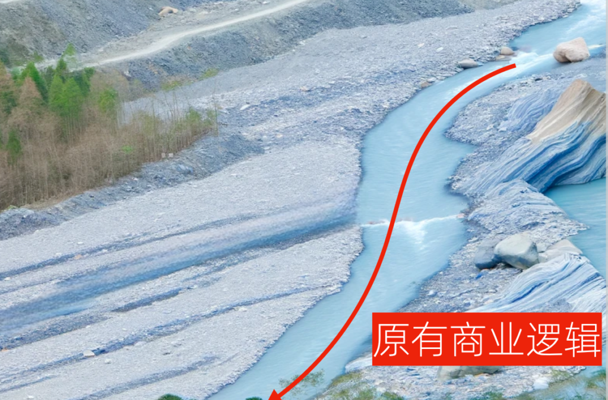
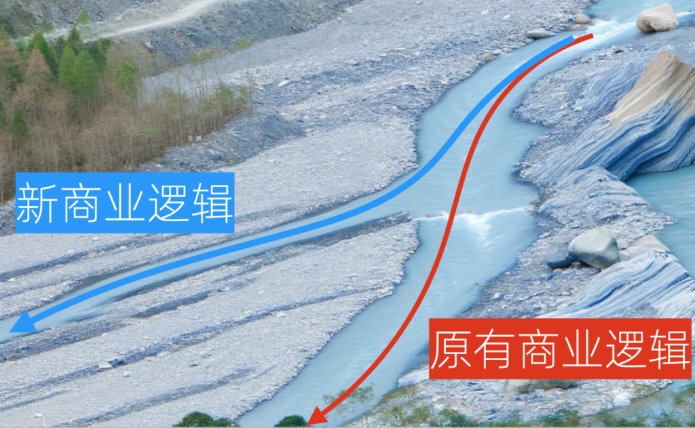
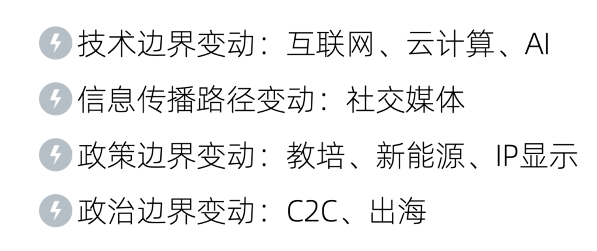
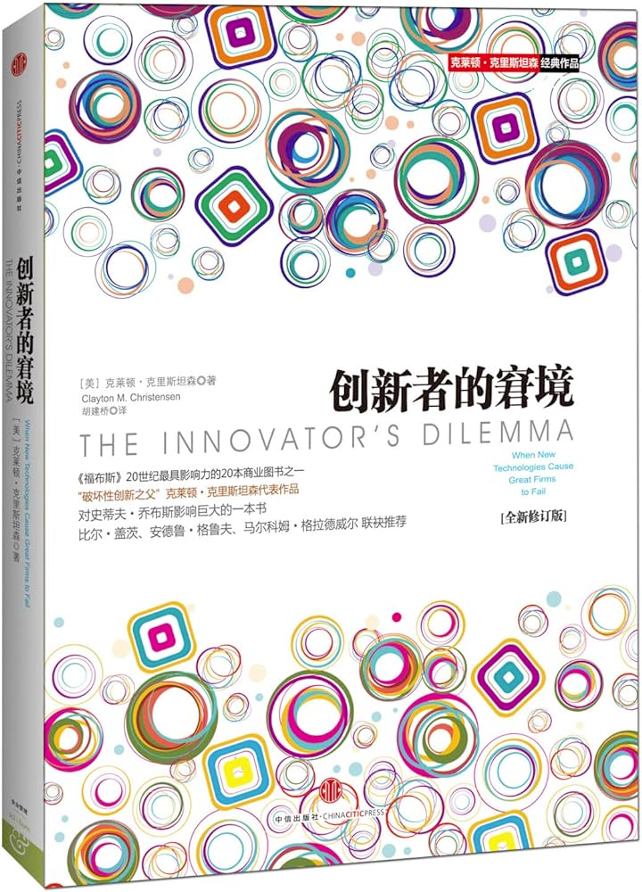
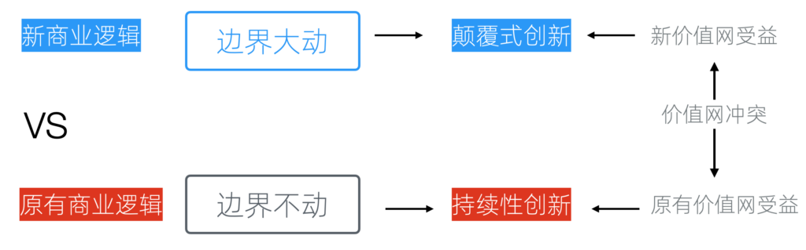

底层逻辑:为什么以小博大是可能的
在「规划一人企业」部分，我想与大家分享三个重要方面的内容：底层逻辑、赛道选择，以及竞争策略。
规划一人企业的三大思考方向
首先，我们必须深刻理解底层逻辑，这是我们方法论的根基。即便未来我们不打算创办一人企业，通过掌握底层逻辑，我们也能推断出其他企业形态应该如何运营。
关于赛道选择和竞争策略，主要目的是讨论我们如何避免与大型企业或那些难以击败的竞争对手形成直接竞争。在项目初期，我们就应该规避这种情况，而不是等到项目进行中或者在开始前就已经意识到可能会面临竞争，却仍旧决定向这个方向进发。
今天我们讨论底层逻辑中的第一个问题，为什么以小博大是可能的。
什么是边界变动
很多人认为，他们之所以能够成功，是因为自己极为聪明，认为全世界除了自己，没有人能够想到他们的点子，因此他们能够成功实现自己的想法。
但事实并非如此。因为我们会发现，许多商业成功人士，并不是第一个想出那个点子的人。实际上，很多时候，能够想到同一点子的往往不是一个人，而是一群人。再说，上下五千年历史，聪明人不计其数，那还剩下什么空间留给今天的我们呢？
有句古话说得好，「时势造英雄」。再聪明人的人，如果生不逢时，也只能抱怨既生瑜何生亮。不同的时势造就不同的英雄。一百年前的人，不管多么聪明，也不可能做成互联网巨头；同样的，今天再聪明的零零后，也难以再做出一个一统全网的门户网站。甚至，即使新浪本身，都只能看着自己的新闻门户变得流量惨淡。
时势背后，是边界的变动。

原有商业逻辑
让我们看一下这个例子：上边的图中有一条河。我用红色箭头标出的地方，代表的是原有的商业逻辑。在没有边界变动的情况下，依河而建的商业逻辑是高效而卓越的，经过多年的迭代，很可能是最优的，而且逐渐形成其竞争门槛。
但是，由于技术的变化、政策的调整、消费习惯的改变等因素，现在出现了新的商业逻辑。这个新的商业逻辑可能像一条新的分支，对原有的商业逻辑中造成了分流。

新的商业逻辑
在有了新支流的情况下，原有的商业逻辑突然就变得不是最优了，它的护城河也可能变得可以绕过了。这就是以小博大的机会。
举个例子，WordPress作为全球最大的开源CMS软件，其超过六万个插件的生态，覆盖了方方面面的细分市场，本站也正是基于WordPress搭建的。后来者要想超越WordPress，就需要在插件和主题生态上和它对齐。在过去，这几乎是不可能的，不但需要人，还需要时间。但是让我们想象一下，如果AI编码变得成熟，那么为一个新平台重写六万个插件，需要多久？我觉得最慢可能用不了一个月。
这就是边界变动带来的机会。
边界变动的类型

边界变动的常见类型
只要放开心态、保持商业敏感性，我们可以从方方面面发现边界变动。这里举一些常见的例子。
技术边界的变动
科技是第一生产力，技术变动可以说是对世界推动最大的。互联网、移动互联网、云计算、推荐算法，这些技术不但催生了当今中国的一个个网络巨头，也完完全全地改变了我们的生活。
很多原本不可能的事情现在成为了可能。互联网的普及带来了网络效应，使原本信息孤立的个体得以连接，信息的充分流动催生了众多商机。同时，云计算大幅降低了互联网企业的基础设施成本，尤其对初创企业而言，他们现在可以通过按需付费的方式来进行资源供应和计费，这在过去几乎是不可想象的。原来企业规模业务的营销成本和硬件成本变得连个人都可以承担，这些因素才促使了个体崛起时代的到来。
至于人工智能，它已经逐步具备了相当于小学生水平的推理能力。这意味着许多以前需要简单思考才能完成的任务，现在可以由人工智能来执行。这是我们正在经历的、也可能是最近几十年最有价值的边界变动。关于人工智能的更多内容，我们将在本书后续的内容中专门介绍。
信息传播路径变动
电视普及以后，中央电视台新闻联播的广告时间成为商业推广的黄金通道。当年能看到这个边界变动的企业，都获得了巨大的流量。例如，1995年孔府宴酒以3079万元成为「标王」，随即销售额和品牌知名度大幅上升。这种巨额投入的回报是超值的，2012年，央视广告总预售额达到142.58亿元。但这种边界变动带来的机会需要巨大的资本投入，对个体来讲是可望而不不可及的。
幸运的是，随着互联网和社交网络的兴起，从门户、博客到现在的微博、抖音，传播中心逐渐从巨型企业转移到个体这边。自媒体成为个体获得流量、参与传播的主要手段，也是一人企业零成本获客的主要途径。本书后续会针对链式传播和流量裂变做专门的讨论。
政策和政治边界的变动
政策变动对商业的影响已经非常明显，补贴政策推动新能源汽车的崛起、教培禁令直接消失了一个行业；甚至强制显示IP属地这种小规定都会让之前难以为继的IP数据库供应商赚得盆满钵满。
政治变动的影响就更大了，中美贸易战对外贸出口企业产生直接的影响；美元基金的减少让Copy2China模式的创业公司急剧减少；国内企业出海受到的不公平待遇也日益增加。
但是，政策和政治变动是我们难以预计和难以改变的。作为一人企业，反而无需过分关心。
边界变动和颠覆式创新
你可能会想，既然出现了新的商业路径，那么，那些处于原商业路径上的公司并非无知，他们难道看不见吗？为什么他们不参与，不将其实施呢？

《创新者的窘境》
在《创新者的窘境》一书中，有专门论述这一问题，推荐大家有空读一读。

边界变动和颠覆式创新
价值网络(Value Network)的概念是指一个由制造商、供应商、服务提供者、分销渠道和消费者等组成的相互依赖的商业组织集合。这个网络围绕着共同的价值主张而存在,为最终用户创造价值。
按《创新者的窘境》的理论来讲，如果行业边界变动微小或不变，所需的便是持续性创新。在原有商业逻辑和价值网络中，建立在原有商业逻辑上的受益者将持续受益，因此他们有动力进行持续性创新以增强自身优势。在这种情况下，我们很难与之竞争。
然而，在商业边界发生大规模变化，且出现了更有效的商业路径时，便涉及到颠覆式创新。
颠覆式创新的典型特点是构建新的价值网络。对于原有商业逻辑的受益者来说，现在出现了新的受益者，相当于他们的利益将受损，因此他们在价值网络中存在冲突，从本质上不愿意实施这一变革。另一方面，新构建的商业路径初始可能效率不高，且存在诸多问题，对于遵循原商业逻辑的客户来说，这一新路径看似可有可无，尽管这是暂时的。
书中提到一个著名的2.5寸硬盘故事。当时主流硬盘为3.5寸和更大尺寸，市场主要由一些大型公司主导。1991年,一家新公司推出了2.5寸小型硬盘。大公司认为2.5寸硬盘的存储容量太小、成本太高、利润太低，不值得重视。它们专注于继续优化自己的3.5寸产品线。
但随着笔记本电脑市场快速增长，2.5寸硬盘需求与日俱增。到1998年，新公司已占据了2.5寸硬盘90%的市场份额。大公司此时意识到错过了这一颠覆性创新，纷纷跟进生产2.5寸硬盘，但为时已晚。
处于主导地位的公司往往会过度关注现有的产品、技术和客户群，而对颠覆性创新反应迟缓，从而最终被市场取代。这就是「创新者的窘境」。这一逻辑不仅适用于一人企业，也是创业公司的核心逻辑。
《网飞传奇》
在《网飞传奇》一书中，有另一个非常生动的例子。
网飞当时的竞争对手百视达，是一个影音行业的巨头。百视达并非未察觉到类似网飞那种租赁电影甚至流媒体的正在兴起。他们看到了未来的趋势，还推出了与网飞竞争的产品，甚至一度对网飞构成威胁。
但他们面临的最大问题是价值网络上的冲突，百视达的线下门店与他们尝试建立的在线业务之间存在矛盾。他们希望利用线下门店的客流优势来支持在线业务，但百视达的加盟商对在线业务持明显敌意，认为线上业务长期看来会削弱线下业务的优势。
因此，尽管未来对所有人都清晰可见，但由于立场和利益的差异，出现了利益冲突，使得他们不愿采取行动或行动不够彻底。这为我们提供了以小博大的机会。虽然以小博大困难重重，但在良好规划的情况下，它是可能的。